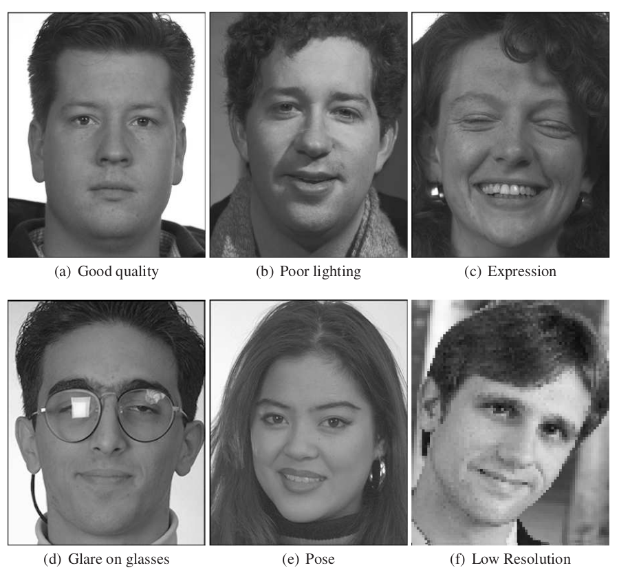

Overview
The face image assessment module provides metrics including head pose, smile detection, inter-eye distance, closed eyes, etc.
Face image quality issues to investigate:

Input
Supported file type: JPG, JPEG, JP2, BMP, PNG
Output
openbq will produce quality metrics generated by processing engine selected in addition to input file metadata. The outputs will be stored as CSV via bqconnect CLI.
Optional processing engines:
OBQE (Open Biometric Quality Engine by OpenBQ)
| Column | Description |
|---|---|
| file | Path to the input file |
| ipd | Inter-pupillary distance |
| confidence | Confidence level of face dectection (not quality score) |
| bbox_left | Left border of the face bounding box coordinates in pixels |
| bbox_upper | Upper border of the face bounding box coordinates in pixels |
| bbox_right | Right border of the face bounding box coordinates in pixels |
| bbox_bottom | Bottom border of the face bounding box coordinates in pixels |
| eye_closed_left | Left eye close or not |
| eye_closed_right | Right eye close or not |
| pupil_right_x | X coordinates of right pupil in pixels |
| pupil_right_y | Y coordinates of right pupil in pixels |
| pupil_left_x | X coordinates of left pupil in pixels |
| pupil_left_y | Y coordinates of left pupil in pixels |
| yaw_pose | Yaw in head pose direction |
| yaw_degree | Yaw in head pose degree |
| pitch_pose | Pitch in head pose direction |
| pitch_degree | Pitch in head pose degree |
| roll_pose | Roll in head pose direction |
| roll_degree | Roll in head pose degree |
| smile | Smile detected or not |
| glasses | Glasses detected or not |
| image_width | Width of the input image in pixels |
| image_height | Height of the input image in pixels |
| face_ratio | Ratio of face area to the whole image |
| brightness | Average brightness of the image |
| dynamic_range | Dynamic range of the image |
| sharpness | Sharpness of the image |
| contrast | Contrast of the image |
| face_offset_x | Horizontal offset of the face from image centre |
| face_offset_y | Vertical offset of the face from image centre |
| background_colour_name | Background colour name |
| background_colour_rgb | Background colour RGB values |
| background_colour_variance | Background colour variance |
| hair_coverage | Coverage ratio of detected hair area to whole face bounding box |
| brightness_variance | Estimation of image brightness variance |
| blurriness | Blur effect metric. An estimate strength of perceptual blurriness |
| gaze_right_x | Right eyeball gazing direction offset percentage horizontal |
| gaze_right_y | Right eyeball gazing direction offset percentage vertical |
| gaze_left_x | Left eyeball gazing direction offset percentage horizontal |
| gaze_left_y | Left eyeball gazing direction offset percentage vertical |
| pupil_colour_right_name | Right pupil colour name |
| pupil_colour_right_rgb | Right pupil colour RGB values |
| pupil_colour_left_name | Left pupil colour name |
| pupil_colour_left_rgb | Left pupil colour RGB values |
| head_top | Top border of head location estimation |
| head_bottom | Bottom border of head location estimation |
| head_right | Right border of head location estimation |
| head_left | Left border of head location estimation |
OFIQ
| Column | Description |
|---|---|
| file | Filename of the input |
| quality | MagFace-based unified quality score measure |
| background_uniformity | Gradient-based background uniformity |
| illumination_uniformity | Illumination uniformity by summing up the minima of the histograms of the left and the right side of the face |
| luminance_mean | Luminance mean measure computed from the luminance histogram |
| luminance_variance | Luminance variance measure computed from the luminance histogram |
| under_exposure_prevention | Under-exposure prevention by computing the proportion of low-intensity pixels in the luminance image to assess the abscence of under-exposure |
| over_exposure_prevention | Over-exposure prevention by computing the proportion of high-intensity pixels in the luminance image to assess the abscence of over-exposure |
| dynamic_range | Dynamic range computed from the luminance histogram |
| sharpness | Sharpness assessment based on a random forest classifier trained by the OFIQ development team |
| compression_artifacts | Assessment of the absence of compression artifact (both JPEG and JPEG2000) based on a CNN trained by the OFIQ development team |
| natural_colour | Assessment of the naturalness of the colour based on the conversion of the RGB presentation of the image to the CIELAB colour space |
| single_face_present | Assessment of the uniqueness of the most dominant face detected by comparing its size with the size of the second largest face detected |
| eyes_open | Eyes openness assessment based on computing eyes aspect ratio from eye landmarks |
| mouth_closed | Mouth closed assessment based on computing a ratio from mouth landmarks |
| eyes_visible | Eyes visibility assessment by measuring the coverage of the eye visibility zone with the result of face occlusion segmentation computed during pre-processing |
| mouth_occlusion_prevention | Assessment of the absence of mouth occlusion by measuring the coverage of the mouth region from mouth landmarks with the result of face occlusion segmentation computed on pre-processing |
| face_occlusion_prevention | Assessment of the absence of face occlusion by measuring the coverage of the landmarked region with the result of face occlusion segmentation computed during pre-processing |
| inter_eye_distance | Inter-eye distance assessment based on computing the Euclidean length of eyes centres and multiplication with the secant of the yaw angle computed during pre-processing |
| head_size | Size of the head based on computing the height of the face computed from facial landmarks with the height of the image |
| leftward_crop_of_the_face_image | Left of the face image crop |
| rightward_crop_of_the_face_image | Right of the face image crop |
| downward_crop_of_the_face_image | Bottom of the face image crop |
| upward_crop_of_the_face_image | Top of the face image crop |
| head_pose_yaw | Pose angle yaw frontal alignment based on the 3DDFAV2 |
| head_pose_pitch | Pose angle pitch frontal alignment based on the 3DDFAV2 |
| head_pose_roll | Pose angle roll frontal alignment based on the 3DDFAV2 |
| expression_neutrality | Expression neutrality estimation based on a fusion of HSEMotion with Efficient-Expression-Neutrality-Estimation |
| no_head_coverings | Assessment of the absence of head coverings by counting the pixels being labelled as head covers in the mask output by the face parsing computed during pre-processing |
BIQT
| Column | Description |
|---|---|
| file | Path to the input file |
| background_deviation | Image background deviation |
| background_grayness | Image background grayness |
| blur | Overall image blurriness |
| blur_face | Face area blurriness |
| focus | Overall image focus |
| focus_face | Face area focus |
| openbr_IPD | Inter eye distance from openbr |
| openbr_confidence | confidence value from openbr |
| opencv_IPD | Inter eye distance from opencv |
| opencv_eye_count | Eye count from opencv |
| opencv_face_found | Face count |
| opencv_face_height | Height of face detected |
| opencv_face_width | Width of face detected |
| opencv_frontal_face_found | Number of front facing head found |
| opencv_landmarks_count | Landmarks of face detected |
| opencv_mouth_count | Number of mouth detected |
| opencv_nose_count | Number of nose detected |
| opencv_profile_face_found | Number of side profile of head |
| over_exposure | Overall image exposure value |
| over_exposure_face | Face area exposure value |
| quality | Overall quality score |
| sap_code | Sap code |
| skin_ratio_face | Skin to face area ratio |
| skin_ratio_full | Skin to fill image area ratio |
| image_area | Image area |
| image_channels | Number of image colour channels |
| image_width | Width of the input image in pixels |
| image_height | Height of the input image in pixels |
| image_ratio | Image aspect ratio |
| openbr_left_eye_x | Left eye x coordinate in pixels |
| openbr_left_eye_y | Left eye y coordinate in pixels |
| openbr_left_eye_x | Right eye x coordinate in pixels |
| openbr_left_eye_x | Right eye y coordinate in pixels |
| opencv_face_center_of_mass_x | Face center of mass x coordinate in pixels |
| opencv_face_center_of_mass_y | Face center of mass y coordinate in pixels |
| opencv_face_offset_x | Face offset x coordinate in pixels |
| opencv_face_offset_y | Face offset y coordinate in pixels |
| opencv_face_x | Face x coordinate in pixels |
| opencv_face_y | Face y coordinate in pixels |
| opencv_left_eye_x | Left eye x coordinate in pixels |
| opencv_left_eye_y | Left eye y coordinate in pixels |
| opencv_right_eye_x | Right eye x coordinate in pixels |
| opencv_right_eye_y | Right eye y coordinate in pixels |
| opencv_mouth_x | Mouth x coordinate in pixels |
| opencv_mouth_y | Mouth y coordinate in pixels |
| opencv_nose_x | Nose x coordinate in pixels |
| opencv_nose_y | Nose y coordinate in pixels |
Not all the columns are included in the table above for clearity.